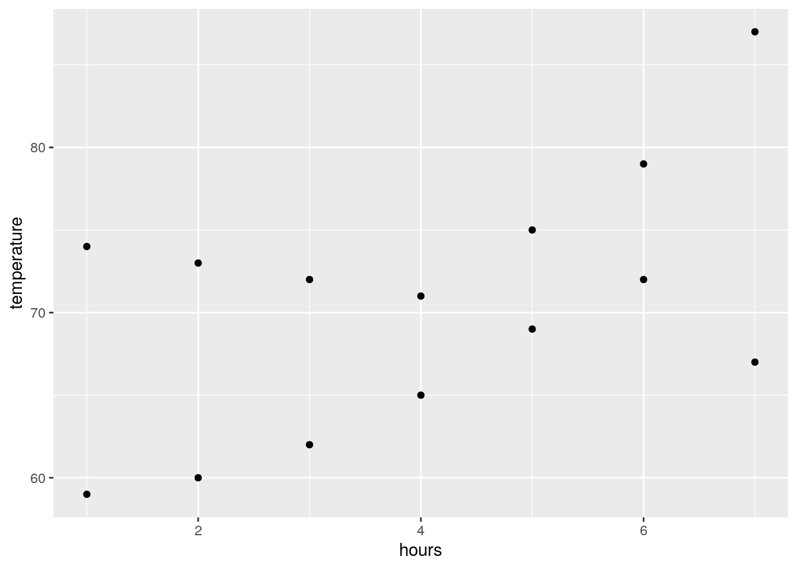
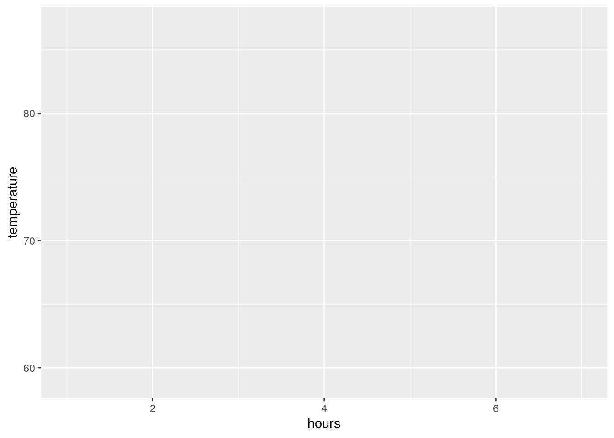
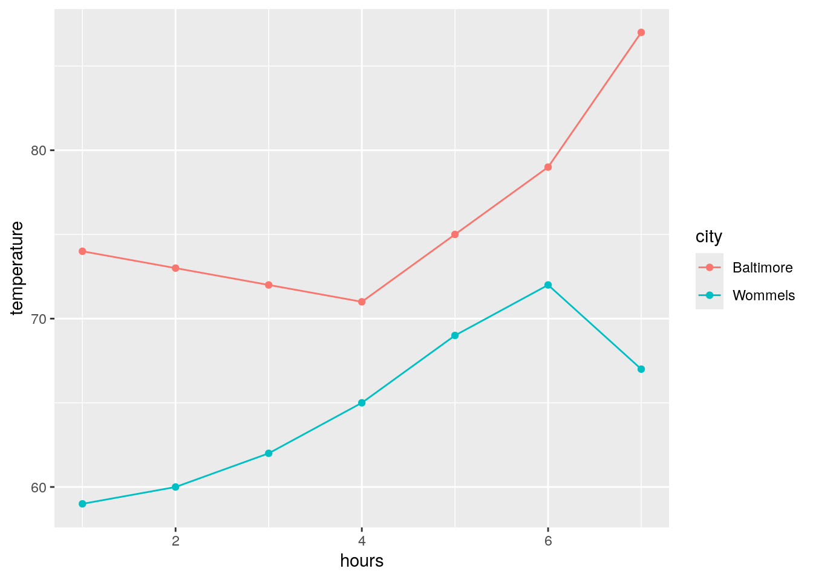
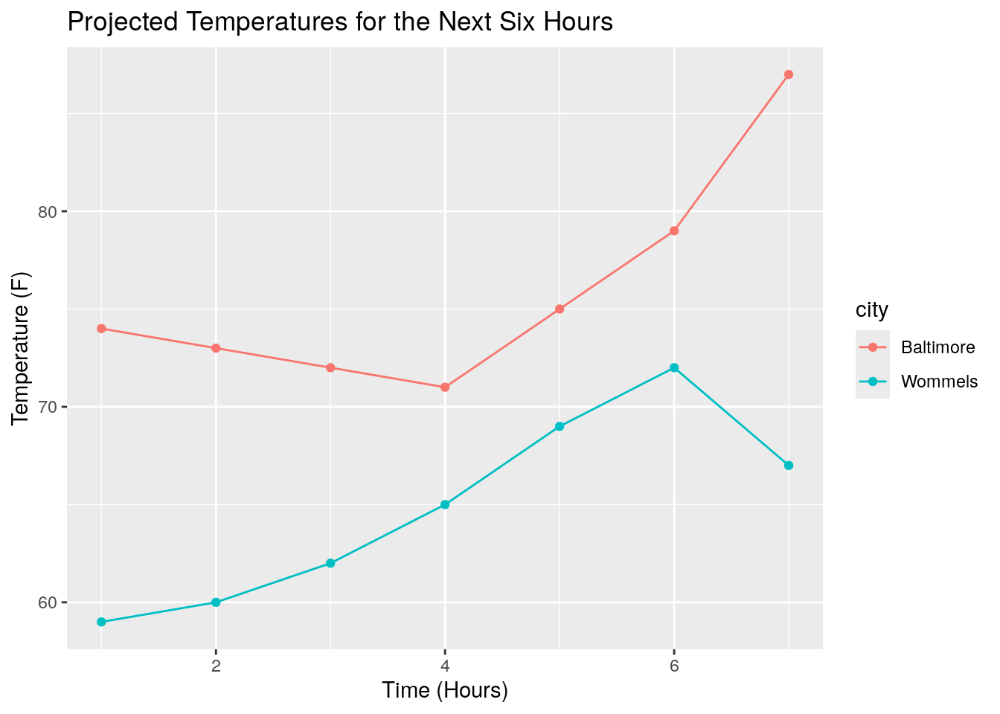
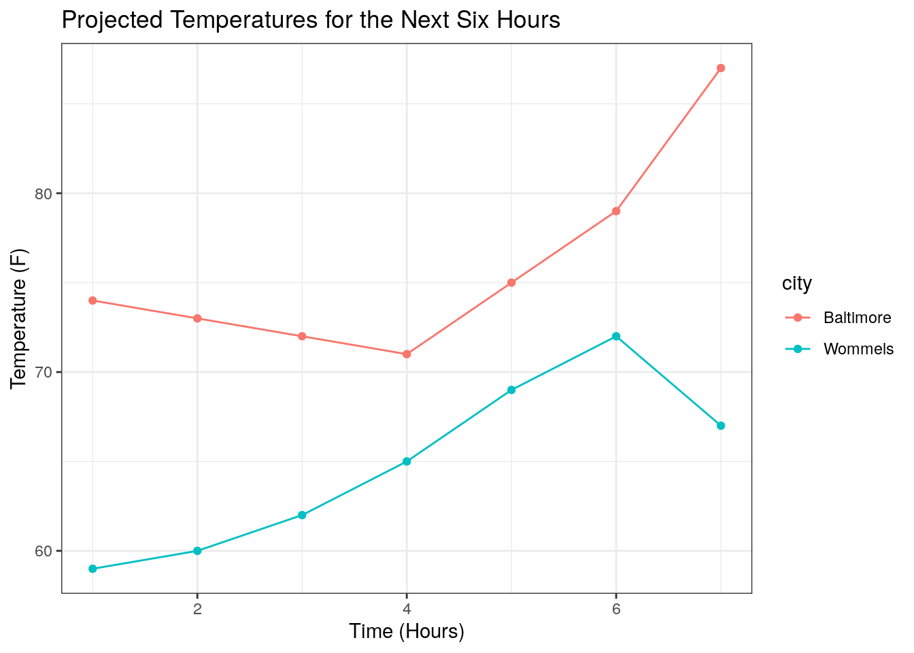
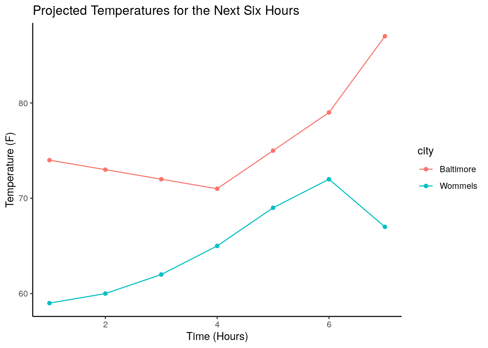

4.7 Plotting
The base R programming language comes with some pretty robust tools for plotting. However, most R users instead use the external library ggplot2, which simplifies plotting and allows for more elaborate data visualization.
Your Posit cloud accounts have ggplot2 pre-installed. However, at the start of each script where you plot, you must let R know that you will use an external package with the line:
For a simple dataset to plot, I’ve saved the temperature in Fahrenheit in Baltimore, MD and Wommels, Netherlands for the next seven hours:
temperatures = data.frame(
hours = seq(1,7),
temperature = c(74, 73, 72, 71, 75, 79, 87, 59, 60, 62, 65, 69, 72, 67),
city = c(rep("Baltimore", 7), rep("Wommels", 7))
)
head(temperatures)## hours temperature city
## 1 1 74 Baltimore
## 2 2 73 Baltimore
## 3 3 72 Baltimore
## 4 4 71 Baltimore
## 5 5 75 Baltimore
## 6 6 79 BaltimoreWe can initialize a blank canvas with a call to the ggplot() function. The first argument that this function takes is the dataset you wish to plot, which in our case is temperatures.

Next, we have to define the axes, groups of data, and other aesthetics. This is done with the aes argument. For our data, it makes sense to have time be the x axis and temperature to be the y axis:

We now have a blank plot with axes. Notice that the scales of our axes are automatically set by the scales of our data (hours ranges from 0 to 7; temperature ranges approximately from 60 to 90).
Now to add some data to our plot. Because ggplot already knows our input data and how the axes are laid out, all we need to do is to say that type of visualization we want (e.g. points, lines, etc.). Let’s start by adding points to our plot:

This plots our data correctly, but notice that we can’t distinguish between the two cities visually. We can group our data points by coloring them differently. To do this, we can add another argument (color) to our aes statement:

This is a pretty clear, interpretable plot! We can pretty easily make a few changes to make it look nicer, though. First, let’s also add a line by adding a geom_line() statement:
ggplot will automatically generate axis labels based on the column names of the input data. However, we can also make more descriptive x and y axis labels along with an overall figure title using xlab(), ylab(), and ggtitle(), respectively:
ggplot(temperatures, aes(x = hours, y = temperature, color = city)) +
geom_point() +
geom_line() +
xlab("Time (Hours)") +
ylab("Temperature (F)") +
ggtitle("Projected Temperatures for the Next Six Hours")
Lastly, it is worth mentioning that we can add theme() statements to modify almost any aspect of our figure’s aesthetics. Along with manually defined theme() statements, ggplot comes with a handful of predefined themes:
ggplot(temperatures, aes(x = hours, y = temperature, color = city)) +
geom_point() +
geom_line() +
xlab("Time (Hours)") +
ylab("Temperature (F)") +
ggtitle("Projected Temperatures for the Next Six Hours") +
theme_classic()